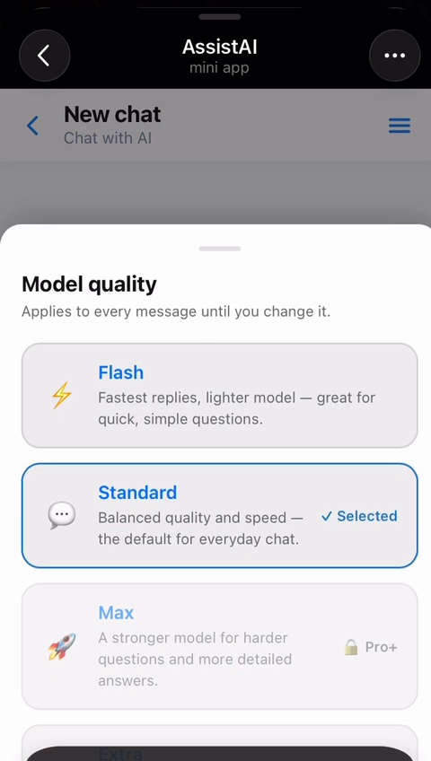
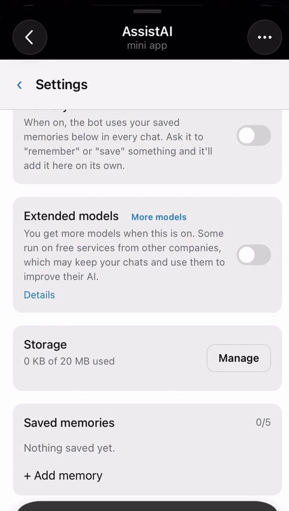
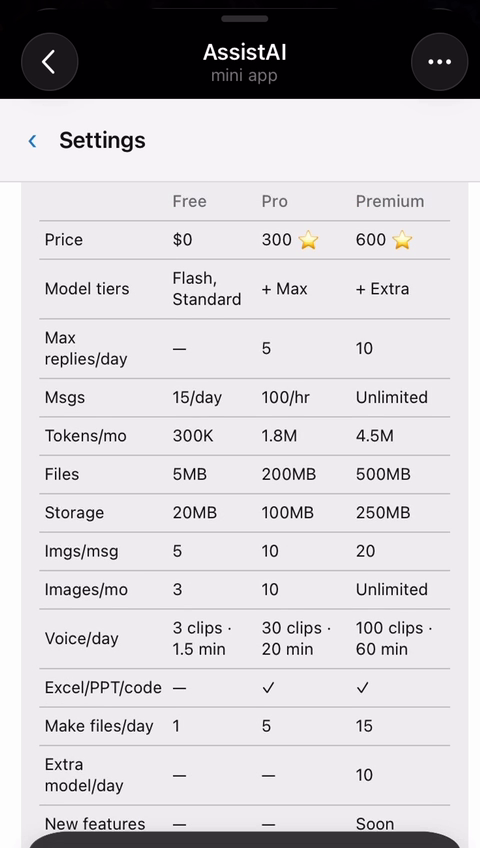

A Telegram bot with a full chat app inside it. You can keep several chats, choose how powerful the model is, search the web and share files, and there is a free plan and paid plans billed with Telegram Stars.
Each chat has Think and Search switches and a model quality picker: Flash for quick answers, Standard for everyday use, and Max on paid plans. Chats are saved, so you can come back to them later.

You can switch between light, dark and system themes, turn saved memories on or off, choose whether extended models are used, see your storage use, and invite friends with a referral link.

Plans are paid with Telegram Stars and renew every month. Each plan has its own limits for replies, tokens, file size, storage, images and voice clips, and the server checks your real plan before it lets you use a higher model.

The bot runs as a webhook on Vercel, so it stays online without my computer. If one AI provider fails, it falls back to the next, and photos use a separate chain of vision models. Web search also falls back across several sources.
It reads photos, PDFs, Word and text files, makes images, takes voice messages and can create files such as Excel, PowerPoint and code on the Pro plans.
Open the bot, send a message and tap the menu button to open the mini app.
Open Assist AI